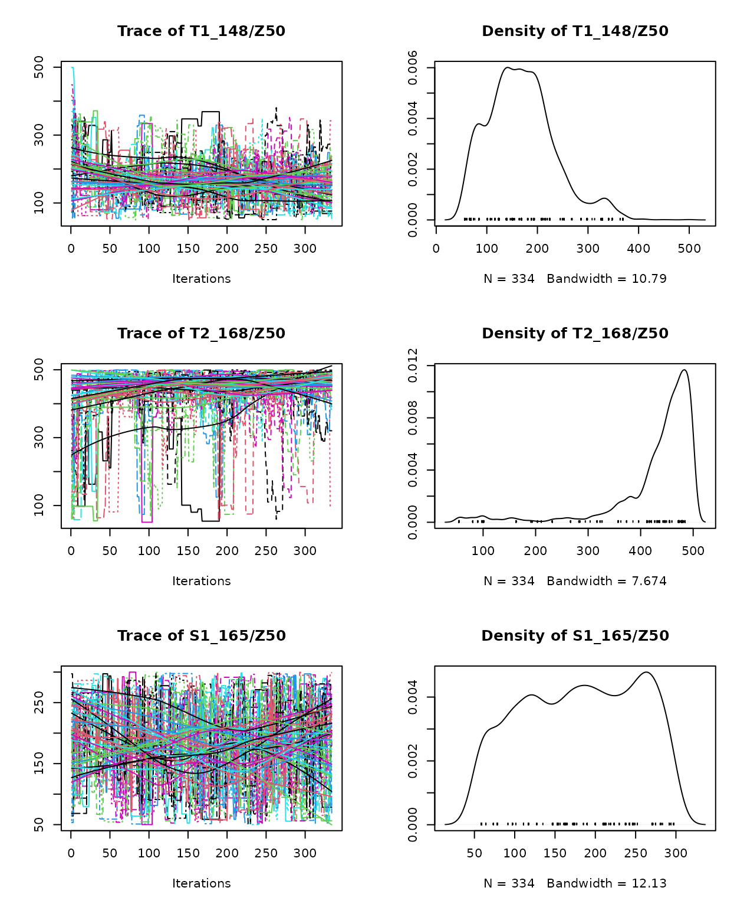
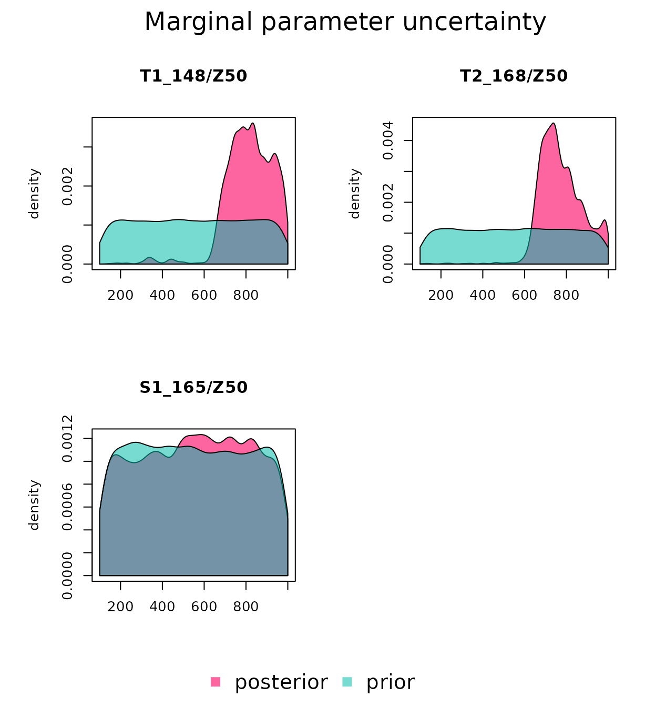
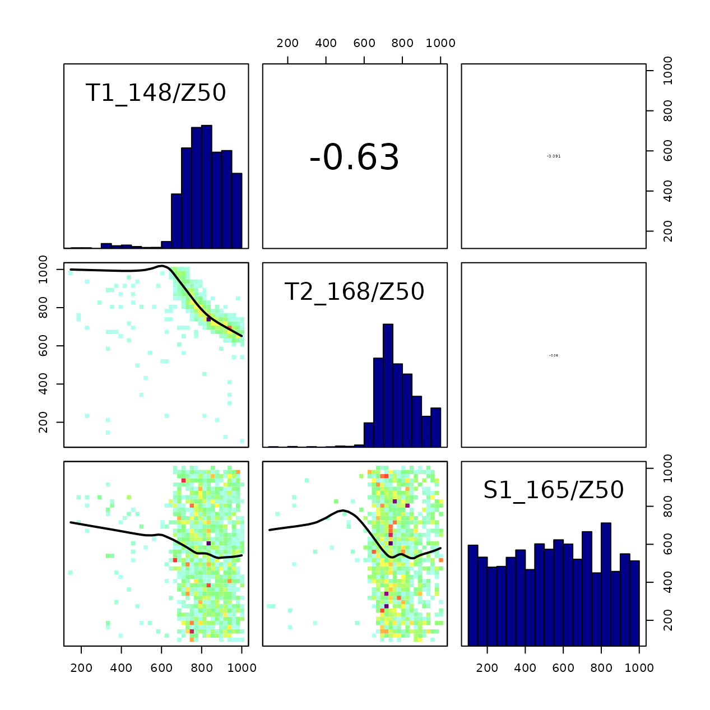
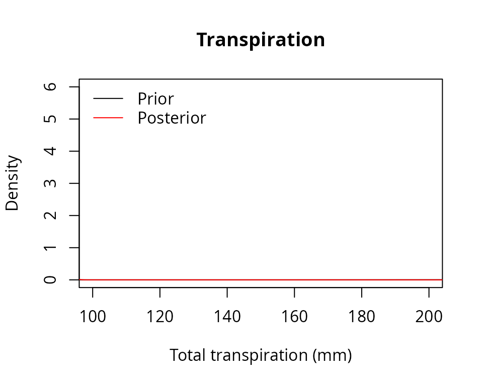
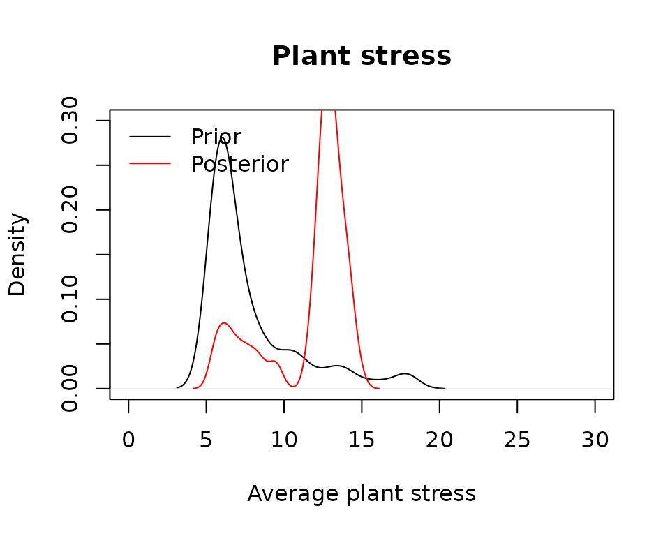

vignettes/modelanalysis/SensitivityCalibration.Rmd
SensitivityCalibration.RmdThe present document shows how to conduct a sensitivity analyses and
calibration exercises on the simulation models included in package
medfate. The document is written assuming that the user is
familiarized with the basic water balance model (i.e. function
spwb). The aim of the exercises presented here are:
spwb() model parameters are more
influential in determining stand transpiration and plant drought
stress.As an example data set we will use here the same data sets provided to illustrate simulation functions in medfate. We begin by loading the package and the example forest data:
## Package 'medfate' [ver. 4.3.2]
data(exampleforest)
exampleforest## $treeData
## Species N DBH Height Z50 Z95
## 1 Pinus halepensis 168 37.55 800 100 600
## 2 Quercus ilex 384 14.60 660 300 1000
##
## $shrubData
## Species Cover Height Z50 Z95
## 1 Quercus coccifera 3.75 80 200 1000
##
## $herbCover
## [1] 10
##
## $herbHeight
## [1] 20
##
## $seedBank
## [1] Species Percent
## <0 rows> (or 0-length row.names)
##
## attr(,"class")
## [1] "forest" "list"We also load the species parameter table and the example weather dataset:
We will focus on three species/cohorts of the example data set:
PH_coh = paste0("T1_", SpParamsMED$SpIndex[SpParamsMED$Name=="Pinus halepensis"])
QI_coh = paste0("T2_", SpParamsMED$SpIndex[SpParamsMED$Name=="Quercus ilex"])
QC_coh = paste0("S1_", SpParamsMED$SpIndex[SpParamsMED$Name=="Quercus coccifera"])The data set consists of a forest with two tree species (Pinus halepensis/T1_148 and Quercus ilex/T2_168) and one shrub species (Quercus coccifera/S1_165 or Kermes oak).
We first define a soil with four layers (default values of texture,
bulk density and rock content) and the species input parameters for
simulation function spwb():
examplesoil <- defaultSoilParams(4)
x1 <- spwbInput(exampleforest,examplesoil, SpParamsMED, control = defaultControl())Although it is not necessary, we make an initial call to the model
(spwb()) with the default parameter settings:
S1<-spwb(x1, examplemeteo, latitude = 41.82592, elevation = 100)## Package 'meteoland' [ver. 2.2.1]## Initial plant water content (mm): 7.05859
## Initial soil water content (mm): 290.875
## Initial snowpack content (mm): 0
## Performing daily simulations
##
## [Year 2001]:....................................
##
## Final plant water content (mm): 7.05925
## Final soil water content (mm): 350.456
## Final snowpack content (mm): 0
## Change in plant water content (mm): 0.000654694
## Plant water balance result (mm): 0.000654694
## Change in soil water content (mm): 59.5809
## Soil water balance result (mm): 59.5809
## Change in snowpack water content (mm): 0
## Snowpack water balance result (mm): -7.10543e-15
## Water balance components:
## Precipitation (mm) 513 Rain (mm) 462 Snow (mm) 51
## Interception (mm) 92 Net rainfall (mm) 370
## Infiltration (mm) 391 Infiltration excess (mm) 30 Saturation excess (mm) 0 Capillarity rise (mm) 2
## Soil evaporation (mm) 11 Herbaceous transpiration (mm) 14 Woody plant transpiration (mm) 187
## Plant extraction from soil (mm) 187 Plant water balance (mm) 0 Hydraulic redistribution (mm) 2
## Runoff (mm) 30 Deep drainage (mm) 122Function spwb() will be implicitly called multiple times
in the sensitivity analyses and calibration analyses that we will
illustrate below.
Model sensitivity analyses are used to investigate how variation in the output of a numerical model can be attributed to variations of its input factors. Input factors are elements that can be changed before model execution and may affect its output. They can be model parameters, initial values of state variables, boundary conditions or the input forcing data (Pianosi et al. 2016).
According to Saltelli et al. (2016), there are three main purposes of sensitivity analyses:
Here we will mostly interested in ranking parameters according to different objectives. We will take as input factors three plant traits (leaf area index, fine root distribution and the water potential corresponding to a reduction in plant conductance) in the three plant cohorts (species), and two soil factors (the rock fragment content of soil layer 1 and 2). In total, eleven model parameters will be studied. The following shows the initial values for plant trait parameters:
x1$above$LAI_live## [1] 0.84874773 0.70557382 0.03062604
x1$below$Z50## [1] 100 300 200
x1$paramsTransp$Psi_Extract## [1] -0.8507809 -1.6598896 -2.1210726
x1$soil$rfc[1:2]## [1] 25 45In the following code we define a vector of parameter names (using
naming rules of function modifyInputParams()) as well as
the input variability space, defined by the minimum and maximum
parameter values:
#Parameter names of interest
parNames = c(paste0(PH_coh,"/LAI_live"), paste0(QI_coh,"/LAI_live"), paste0(QC_coh,"/LAI_live"),
paste0(PH_coh,"/Z50"), paste0(QI_coh,"/Z50"), paste0(QC_coh,"/Z50"),
paste0(PH_coh,"/Psi_Extract"), paste0(QI_coh,"/Psi_Extract"), paste0(QC_coh,"/Psi_Extract"),
"rfc@1", "rfc@2")
parNames## [1] "T1_148/LAI_live" "T2_168/LAI_live" "S1_165/LAI_live"
## [4] "T1_148/Z50" "T2_168/Z50" "S1_165/Z50"
## [7] "T1_148/Psi_Extract" "T2_168/Psi_Extract" "S1_165/Psi_Extract"
## [10] "rfc@1" "rfc@2"In sensitivity analyses, model output is summarized into a single variable whose variation is to be analyzed. Pianosi et al. (2016) distinguish two types of model output functions:
Here we will use examples of both kinds. First, we define a function that, given a simulation result, calculates total transpiration (mm) over the simulated period (one year):
sf_transp<-function(x) {sum(x$WaterBalance$Transpiration, na.rm=TRUE)}
sf_transp(S1)## [1] 186.8537Another prediction function can focus on plant drought stress. We define a function that, given a simulation result, calculates the average drought stress of plants (measured using the water stress index) over the simulated period:
sf_stress<-function(x) {
lai <- x$spwbInput$above$LAI_live
lai_p <- lai/sum(lai)
stress <- droughtStress(x, index="WSI", draw = F)
mean(sweep(stress,2, lai_p, "*"), na.rm=T)
}
sf_stress(S1)## [1] 2.261158Sensitivity analysis requires model output functions whose parameters
are the input factors to be studied. \[\begin{equation}
y = g(\mathbf{x}) = g(x_1, x_2, \dots, x_n)
\end{equation}\] where \(y\) is
the output, \(g\) is the output
function and \(\mathbf{x} = \{x_1, x_2, \dots,
x_n\}\) is the vector of parameter input factors. Functions
of_transp and of_stress take simulation
results as input, not values of input factors. Instead, we need to
define functions that take soil and plant trait values as input, run the
soil plant water balance model and return the desired prediction or
performance statistic. These functions can be generated using the
function factory optimization_function(). The following
code defines one of such functions focusing on total transpiration:
of_transp<-optimization_function(parNames = parNames,
x = x1,
meteo = examplemeteo,
latitude = 41.82592, elevation = 100,
summary_function = sf_transp)Note that we provided all the data needed for simulations as input to
optimization_function(), as well as the names of the
parameters to study and the function sf_transp. The
resulting object of_transp is a function itself, which we
can call with parameter values (or sets of parameter values) as
input:
of_transp(parMin)## [1] 38.88857
of_transp(parMax)## [1] 328.5823It is important to understand the steps that are done when we call
of_transp():
of_transp() calls spwb()
using all the parameters specified in its construction (i.e. in the call
to the function factory), except for the input factors indicated in
parNames, which are specified as input at the time of
calling of_transp().sf_transp() and the output of this last function is
returned as output of of_transp().We can build a similar model output function, in this case focusing
on plant stress (note that the only difference in the call to the
factory is in the specification of sf_stress as summary
function, instead of sf_transp).
of_stress<-optimization_function(parNames = parNames,
x = x1,
meteo = examplemeteo,
latitude = 41.82592, elevation = 100,
summary_function = sf_stress)
of_stress(parMin)## [1] 1.187327
of_stress(parMax)## [1] 83.96911As mentioned above, another kind of output function can be the evaluation of model performance. Here we will assume that performance in terms of predictability of soil water content is desired; and use a data set of ‘observed’ values (actually simulated values with gaussian error) as reference:
## dates SWC ETR E_T1_148 E_T2_168 FMC_T1_148 FMC_T2_168
## 1 2001-01-01 0.3226725 2.0878000 0.06767226 0.13037215 125.8863 93.07454
## 2 2001-01-02 0.3075006 1.8600163 0.18000610 0.16555452 125.8842 93.07371
## 3 2001-01-03 0.3084646 0.3046051 0.17749022 0.06893953 125.9102 93.08329
## 4 2001-01-04 0.3296031 1.5591229 0.10159948 0.01531790 125.9053 93.08481
## 5 2001-01-05 0.3242696 1.2159743 0.15278858 0.18279733 125.9459 93.09727
## 6 2001-01-06 0.3564156 2.1784826 0.16661375 0.10051714 125.9148 93.08308
## BAI_T1_148 BAI_T2_168 DI_T1_148 DI_T2_168
## 1 2.014482e-05 0 2.118615e-07 0
## 2 1.198392e-09 0 3.763209e-11 0
## 3 2.630563e-13 0 0.000000e+00 0
## 4 2.697499e-11 0 7.446822e-13 0
## 5 4.698752e-03 0 1.081387e-04 0
## 6 1.995606e-03 0 3.292066e-05 0where soil water content dynamics is in column SWC. The
model fit to observed data can be measured using the Nash-Sutcliffe
coefficient, which we calculate for the initial run using function
evaluation_metric():
evaluation_metric(S1, measuredData = exampleobs, type = "SWC",
metric = "NSE")## [1] 0.9113681A call to evaluation_metric() provides the coefficient
given a model simulation result, but is not a model output function as
we defined above. Analogously to the measures of total transpiration and
average plant stress, we can use a function factory to define a model
output function that takes input factors as inputs, runs the model and
performs the evaluation:
of_eval<-optimization_evaluation_function(parNames = parNames,
x = x1,
meteo = examplemeteo, latitude = 41.82592, elevation = 100,
measuredData = exampleobs, type = "SWC",
metric = "NSE")Function of_eval() stores internally both the data
needed for conducting simulations and the data needed for evaluating
simulation results, so that we only need to provide values for the input
factors:
of_eval(parMin)## [1] 0.5101192
of_eval(parMax)## [1] -11.25711Sensitivity analysis is either referred to as local or global, depending on variation of input factors is studied with respect to some initial parameter set (local) or the whole space of input factors is taken into account (global). Here we will conduct global sensitivity analyses using package sensitivity (Ioss et al. 2020):
library(sensitivity)## Registered S3 method overwritten by 'sensitivity':
## method from
## print.src dplyr##
## Attaching package: 'sensitivity'## The following object is masked from 'package:medfate':
##
## extractThis package provides a suite of approaches to global sensitivity
analysis. Among them, we will follow the Elementary Effect Test
implemented in function morris(). We call this function to
analyze sensitivity of total transpiration simulated by
spwb() to input factors (500 runs are done, so be
patient):
sa_transp <- morris(of_transp, parNames, r = 50,
design = list(type = "oat", levels = 10, grid.jump = 3),
binf = parMin, bsup = parMax, scale=TRUE, verbose=FALSE)Apart from indicating the sampling design to sample the input factor
space, the call to morris() includes the response model
function (in our case of_transp), the parameter names and
parameter value boundaries (i.e. parMin and
parMax).
print(sa_transp)##
## Call:
## morris(model = of_transp, factors = parNames, r = 50, design = list(type = "oat", levels = 10, grid.jump = 3), binf = parMin, bsup = parMax, scale = TRUE, verbose = FALSE)
##
## Model runs: 600
## mu mu.star sigma
## T1_148/LAI_live 153.6591445 162.6752000 84.4307909
## T2_168/LAI_live 95.3652583 107.8969236 62.7946309
## S1_165/LAI_live 146.7424176 152.7440550 72.7860722
## T1_148/Z50 -3.1140109 4.9123925 10.9257630
## T2_168/Z50 -1.0121568 2.3895855 8.0897898
## S1_165/Z50 0.1440795 0.4817739 0.9125476
## T1_148/Psi_Extract -3.1010337 6.1051877 10.9368259
## T2_168/Psi_Extract -2.6449397 3.5882482 5.8285725
## S1_165/Psi_Extract -0.4657024 3.3910221 9.9270164
## rfc@1 -10.0489723 10.0489723 17.5544947
## rfc@2 -16.0083538 16.0112776 33.9905052mu.star values inform about the mean of elementary
effects of each \(i\) factor and can be
used to rank all the input factors, whereas sigma inform
about the degree of interaction of the \(i\)-th factor with others. According to the
result of this sensitivity analysis, leaf area index
(LAI_live) parameters are the most relevant to determine
total transpiration, much more than fine root distribution
(Z50), the rock fragment content in the soil and the water
potentials corresponding to whole-plant conductance reduction
(i.e. Psi_Extract).
We can run the same sensitivity analysis but focusing on the input
factors relevant for predicted plant drought stress (i.e. using
of_stress as model output function):
sa_stress <- morris(of_stress, parNames, r = 50,
design = list(type = "oat", levels = 10, grid.jump = 3),
binf = parMin, bsup = parMax, scale=TRUE, verbose=FALSE)
print(sa_stress)##
## Call:
## morris(model = of_stress, factors = parNames, r = 50, design = list(type = "oat", levels = 10, grid.jump = 3), binf = parMin, bsup = parMax, scale = TRUE, verbose = FALSE)
##
## Model runs: 600
## mu mu.star sigma
## T1_148/LAI_live 39.3701732 40.6280153 43.012050
## T2_168/LAI_live 24.2422700 24.2422700 28.709054
## S1_165/LAI_live 34.2099445 34.2099445 37.462036
## T1_148/Z50 1.7496071 3.5329408 8.654708
## T2_168/Z50 0.2240808 1.5457806 3.052235
## S1_165/Z50 -0.2410193 0.7326172 1.020798
## T1_148/Psi_Extract -0.9947753 4.5214926 14.289468
## T2_168/Psi_Extract -3.1169767 3.1169767 9.000830
## S1_165/Psi_Extract -1.0580752 1.0580752 1.693242
## rfc@1 8.2724188 8.2724188 11.264721
## rfc@2 3.2186280 11.1825579 24.324838Again, LAI values parameters are the most relevant, but closely
followed by the water potentials corresponding to whole-plant
conductance reduction (i.e. Psi_Extract), which appear as
more relevant than parameters of fine root distribution
(Z50) and rock fragment content (rfc).
Finally, we can study the contribution of input factors to model
performance in terms of soil water content dynamics (i.e. using
of_eval as model output function):
sa_eval <- morris(of_eval, parNames, r = 50,
design = list(type = "oat", levels = 10, grid.jump = 3),
binf = parMin, bsup = parMax, scale=TRUE, verbose=FALSE)
print(sa_eval)##
## Call:
## morris(model = of_eval, factors = parNames, r = 50, design = list(type = "oat", levels = 10, grid.jump = 3), binf = parMin, bsup = parMax, scale = TRUE, verbose = FALSE)
##
## Model runs: 600
## mu mu.star sigma
## T1_148/LAI_live -12.8813849 12.8813849 6.7216712
## T2_168/LAI_live -7.1523876 7.2482813 4.3856065
## S1_165/LAI_live -10.3023170 10.3023170 5.9723072
## T1_148/Z50 2.9462338 2.9655605 2.8234231
## T2_168/Z50 0.7120910 0.7132248 0.4806898
## S1_165/Z50 0.4317170 0.4401409 0.2578594
## T1_148/Psi_Extract 0.2343639 0.3865185 0.7713386
## T2_168/Psi_Extract 0.1737744 0.1996813 0.3235109
## S1_165/Psi_Extract 0.1981883 0.2465299 0.5361140
## rfc@1 -2.0935668 2.2512164 2.6786947
## rfc@2 -1.3197193 1.6729610 1.9113855Contrary to the previous cases, the contribution of LAI parameters is
similar to that of parameters of fine root distribution
(Z50), which appear as more relevant than the water
potentials corresponding to whole-plant conductance reduction
(i.e. Psi_Extract).
By model calibration we mean here the process of finding suitable parameter values (or suitable parameter distributions) given a set of observations. Hence, the idea is to optimize the correspondence between model predictions and observations by changing model parameter values.
To simplify our analysis and avoid problems of parameter
identifiability, we focus here on the calibration of parameter
Z50 of fine root distribution. Below we redefine vectors
parNames, parMin, and parMax; and
we specify a vector of initial values.
#Parameter names of interest
parNames = c(paste0(PH_coh,"/Z50"), paste0(QI_coh,"/Z50"), paste0(QC_coh,"/Z50"))
#Parameter minimum and maximum values
parMin = c(50,50,50)
parMax = c(500,500,300)
parIni = x1$below$Z50In order to run calibration analyses we need to define an objective
function. Many evaluation metrics could be used but it is common
practice to use likelihood functions . We can use the function
factory optimization_evaluation_function and the ‘observed’
data to this aim, but in this case we specify a log-likelihood with
Gaussian error as the evaluation metric for of_eval().
of_eval<-optimization_evaluation_function(parNames = parNames,
x = x1,
meteo = examplemeteo, latitude = 41.82592, elevation = 100,
measuredData = exampleobs, type = "SWC",
metric = "loglikelihood")Model calibration can be performed using a broad range of approaches.
Many of them - including simulated annealing, genetic algorithms,
gradient methods, etc. - focus on the maximization or minimization of
the objective function. To illustrate this common approach, we will use
function optim from package stats, which
provides several optimization methods. In particular we will use
“L-BFGS-B”, which is the “BFGS” quasi-Newton method published by
Broyden, Fletcher, Goldfarb and Shanno, modified by the inclusion of
minimum and maximum boundaries. By default, function optim
performs the minimization of the objective function (here
of_eval), but we can specify a negative value for control
parameter fnscale to turn the process into a maximization
of maximum likelihood:
opt_cal = optim(parIni, of_eval, method = "L-BFGS-B",
control = list(fnscale = -1), verbose = FALSE)The calibration result is the following:
print(opt_cal)## $par
## [1] 305.8826 110.5760 187.2690
##
## $value
## [1] 909.4165
##
## $counts
## function gradient
## 25 25
##
## $convergence
## [1] 0
##
## $message
## [1] "CONVERGENCE: REL_REDUCTION_OF_F <= FACTR*EPSMCH"Note that the optimized parameters are relatively close to those of
Z50 in the original x1.
cbind( x1$below[,"Z50", drop = FALSE], opt_cal$par)## Z50 opt_cal$par
## T1_148 100 305.8826
## T2_168 300 110.5760
## S1_165 200 187.2690This occurs because these default values were used to generate the
‘observed’ data in exampleobs, which contains a small
amount of non-systematic error.
As an example of a more sophisticated model calibration, we will conduct a Bayesian calibration analysis using package BayesianTools (Hartig et al. 2019):
In a Bayesian analysis one evaluates how the uncertainty in model
parameters is changed (hopefully reduced) after observing some data,
because observed values do not have the same likelihood under all
regions of the parameter space. For a Bayesian analysis we need to
specify a (log)likelihood function and the prior distribution (i.e. the
initial uncertainty) of the input factors. The central object in the
BayesianTools package is the
BayesianSetup. This class, created by calls to
createBayesianSetup(), contains the information about the
model to be fit (likelihood), and the priors for model parameters. In
absence of previous data, we specify a uniform distribution between the
minimum and maximum values, which in the BayesianTools
package can be done using function
createUniformPrior():
prior <- createUniformPrior(parMin, parMax, parIni)
mcmc_setup <- createBayesianSetup(likelihood = of_eval,
prior = prior,
names = parNames)Function createBayesianSetup() automatically creates the
posterior and various convenience functions for the Markov Chain Monte
Carlo (MCMC) samplers. The runMCMC() function is the main
wrapper for all other implemented MCMC functions. Here we call it with
nine chains of 1000 iterations each.
mcmc_out <- runMCMC(
bayesianSetup = mcmc_setup,
sampler = "DEzs",
settings = list(iterations = 1000, nrChains = 9))By default runMCMC() uses parallel computation, but the
calibration process is nevertheless rather slow.
A summary function is provided to inspect convergence results and correlation between parameters:
summary(mcmc_out)## # # # # # # # # # # # # # # # # # # # # # # # # #
## ## MCMC chain summary ##
## # # # # # # # # # # # # # # # # # # # # # # # # #
##
## # MCMC sampler: DEzs
## # Nr. Chains: 27
## # Iterations per chain: 334
## # Rejection rate: 0.751
## # Effective sample size: 673
## # Runtime: 2212.486 sec.
##
## # Parameters
## psf MAP 2.5% median 97.5%
## T1_148/Z50 1.037 306.754 101.883 245.343 345.003
## T2_168/Z50 1.034 109.695 59.929 306.980 490.651
## S1_165/Z50 1.036 179.784 57.204 182.498 294.762
##
## ## DIC: -1816.525
## ## Convergence
## Gelman Rubin multivariate psrf: 1.077
##
## ## Correlations
## T1_148/Z50 T2_168/Z50 S1_165/Z50
## T1_148/Z50 1.000 -0.801 -0.128
## T2_168/Z50 -0.801 1.000 0.066
## S1_165/Z50 -0.128 0.066 1.000According to the Gelman-Rubin diagnostic, the convergence can be accepted because the multivariate potential scale reduction factor was ≤ 1.1. We can plot the Markov Chains and the posterior density distribution of parameters that they generate using:
plot(mcmc_out)
We can also plot the marginal prior and posterior density distributions
for each parameter. In this case, we see a similar Z50
distribution for the two trees, which is more informative than the prior
distribution. In contrast, the posterior distribution of
Z50 for the kermes oak remains as uncertain as the prior
one. This happens because the LAI value of kermes oak is low, so that it
has small influence on soil water dynamics regardless of its root
distribution.
marginalPlot(mcmc_out, prior = T)
Plots can also be produced to display the correlation between parameter values.
correlationPlot(mcmc_out)
Here it can be observed the large correlation between Z50
of the two tree cohorts. Since their LAI values are similar, a similar
effect on soil water depletion can be obtained to some extent by
exchanging their fine root distribution.
Posterior model prediction distributions can be obtained if we take samples from the Markov chains and use them to perform simulations (here we use sample size of 100 but a larger value is preferred).
## T1_148/Z50 T2_168/Z50 S1_165/Z50
## [1,] 217.9150 478.40434 258.52315
## [2,] 260.5909 213.55127 184.20214
## [3,] 243.8444 244.94568 233.38867
## [4,] 166.7885 73.53628 230.78928
## [5,] 313.5510 258.36418 216.23578
## [6,] 276.2950 276.41855 71.93304To this aim, medfate includes function
multiple_runs() that allows running a simulation model with
a matrix of parameter values. For example, the following code runs
spwb() with all combinations of fine root distribution
specified in s.
MS = multiple_runs(s, x = x1, meteo = examplemeteo,
latitude = 41.82592, elevation = 100, verbose = FALSE)Function multiple_runs() determines the model to be
called inspecting the class of x (here x1 is a
spwbInput). Once we have conducted the simulations we can
inspect the posterior distribution of several prediction variables, for
example total transpiration:
plot(density(unlist(lapply(MS, sf_transp))), main = "Posterior transpiration",
xlab = "Total transpiration (mm)")or average plant drought stress:
plot(density(unlist(lapply(MS, sf_stress))),
xlab = "Average plant stress", main="Posterior stress")Finally, we can use object prior to generate another
sample under the prior parameter distribution, perform simulations:
s_prior = prior$sampler(100)
colnames(s_prior)<- parNames
MS_prior = multiple_runs(s_prior, x = x1, meteo = examplemeteo,
latitude = 41.82592, elevation = 100, verbose = FALSE)and compare the prior prediction uncertainty with the posterior prediction uncertainty for the same output variables:
plot(density(unlist(lapply(MS_prior, sf_transp))), main = "Transpiration",
xlab = "Total transpiration (mm)",
xlim = c(100,200), ylim = c(0,6))
lines(density(unlist(lapply(MS, sf_transp))), col = "red")
legend("topleft", legend = c("Prior", "Posterior"),
col = c("black", "red"), lty=1, bty="n")
plot(density(unlist(lapply(MS_prior, sf_stress))), main = "Plant stress",
xlab = "Average plant stress",
xlim = c(0,30), ylim = c(0,2))
lines(density(unlist(lapply(MS, sf_stress))), col = "red")
legend("topleft", legend = c("Prior", "Posterior"), col = c("black", "red"), lty=1, bty="n")